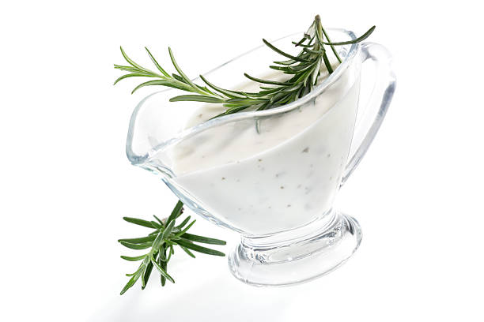

Tartar Sauce
From: Graziella

Description
This homemade tartar sauce is far more flavorful than the version found in restaurants.
Serve with fish or other dishes
Ingredients
- 1 cup good mayonnaise
- 1/2 a small yellow onion
- Fresh parsley
- 1 medium-sized lactic acid pickle (the taste of vinegar-pickled pickles will not be as good in finished sauce)
- 1-2 Tbls. fresh lemon juice
- Salt and pepper to taste
Steps
- Roughly chop parsley
- Finely dice onion and pickle
- Mix with mayo and lemon juice
- Season with salt and pepper
- Enjoy!
Return to main recipe page